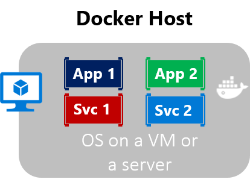
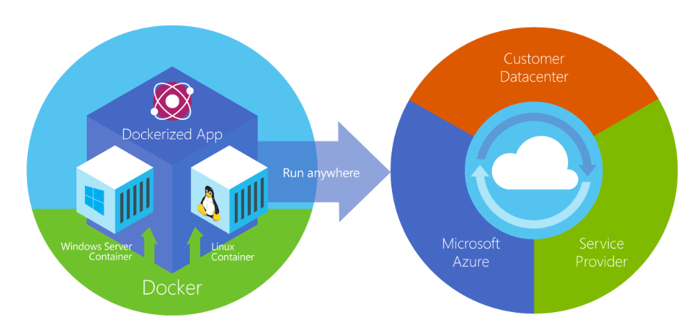
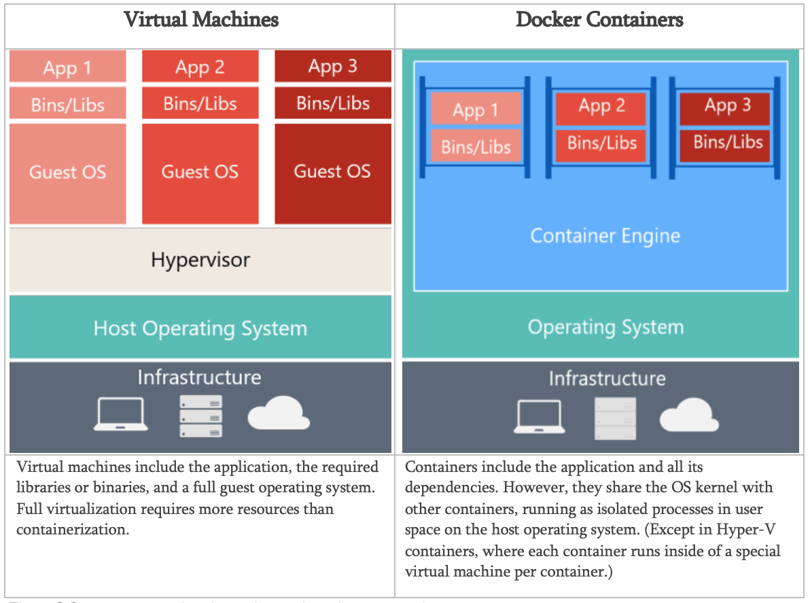

Introduction to Containers and Docker
Containerization is an approach to software development in which an application or service, its dependencies, and its configuration (abstracted as deployment manifest files) are packaged together as a container image. The containerized application can be tested as a unit and deployed as a container image instance to the host operating system (OS).
Just as shipping containers allow goods to be transported by ship, train, or truck regardless of the cargo inside, software containers act as a standard unit of software deployment that can contain different code and dependencies. Containerizing software this way enables developers and IT professionals to deploy them across environments with little or no modification.
Containers also isolate applications from each other on a shared OS. Containerized applications run on top of a container host that in turn runs on the OS (Linux or Windows). Containers therefore have a significantly smaller footprint than virtual machine (VM) images.
Each container can run a whole web application or a service, as shown in Figure 2-1. In this example, Docker host is a container host, and App1, App2, Svc 1, and Svc 2 are containerized applications or services.

Figure 2-1. Multiple containers running on a container host
Another benefit of containerization is scalability. You can scale out quickly by creating new containers for short-term tasks. From an application point of view, instantiating an image (creating a container) is similar to instantiating a process like a service or web app. For reliability, however, when you run multiple instances of the same image across multiple host servers, you typically want each container (image instance) to run in a different host server or VM in different fault domains.
In short, containers offer the benefits of isolation, portability, agility, scalability, and control across the whole application lifecycle workflow. The most important benefit is the environment’s isolation provided between Dev and Ops.
Docker is an open-source project for automating the deployment of applications as portable, self-sufficient containers that can run on the cloud or on-premises. Docker is also a company that promotes and evolves this technology, working in collaboration with cloud, Linux, and Windows vendors, including Microsoft.

Figure 2-2. Docker deploys containers at all layers of the hybrid cloud
Docker image containers can run natively on Linux and Windows. However, Windows images can run only on Windows hosts and Linux images can run on Linux hosts and Windows hosts (using a Hyper-V Linux VM, so far), where host means a server or a VM.
Developers can use development environments on Windows, Linux, or macOS. On the development computer, the developer runs a Docker host where Docker images are deployed, including the app and its dependencies. Developers who work on Linux or on the Mac use a Docker host that is Linux based, and they can create images only for Linux containers. (Developers working on the Mac can edit code or run the Docker CLI from macOS, but as of the time of this writing, containers don’t run directly on macOS.) Developers who work on Windows can create images for either Linux or Windows Containers.
To host containers in development environments and provide additional developer tools, Docker ships Docker Community Edition (CE) for Windows or for macOS. These products install the necessary VM (the Docker host) to host the containers. Docker also makes available Docker Enterprise Edition (EE), which is designed for enterprise development and is used by IT teams who build, ship, and run large business-critical applications in production.
To run Windows Containers, there are two types of runtimes:
The images for these containers are created the same way and function the same. The difference is in how the container is created from the image running a Hyper-V Container requires an extra parameter. For details, see Hyper-V Containers.
Figure 2-3 shows a comparison between VMs and Docker containers.
Figure 2-3. Comparison of traditional virtual machines to Docker containers
Because containers require far fewer resources (for example, they don’t need a full OS), they’re easy to deploy and they start fast. This allows you to have higher density, meaning that it allows you to run more services on the same hardware unit, thereby reducing costs.
As a side effect of running on the same kernel, you get less isolation than VMs.
The main goal of an image is that it makes the environment (dependencies) the same across different deployments. This means that you can debug it on your machine and then deploy it to another machine with the same environment guaranteed.
A container image is a way to package an app or service and deploy it in a reliable and reproducible way. You could say that Docker isn’t only a technology but also a philosophy and a process.
When using Docker, you won’t hear developers say, “It works on my machine, why not in production?” They can simply say, “It runs on Docker”, because the packaged Docker application can be executed on any supported Docker environment, and it runs the way it was intended to on all deployment targets (such as Dev, QA, staging, and production).
Perhaps a simple analogy can help getting the grasp of the core concept of Docker.
Let’s go back in time to the 1950s for a moment. There were no word processors, and the photocopiers were used everywhere (kind of).
Imagine you’re responsible for quickly issuing batches of letters as required, to mail them to customers, using real paper and envelopes, to be delivered physically to each customer’s address (there was no email back then).
At some point, you realize the letters are just a composition of a large set of paragraphs, which are picked and arranged as needed, according to the purpose of the letter, so you devise a system to issue letters quickly, expecting to get a hefty raise.
The system is simple:
So, simplifying, that’s the core idea of Docker.
In Docker, each layer is the resulting set of changes that happen to the filesystem after executing a command, such as, installing a program.
So, when you “look” at the filesystem after the layer has been copied, you see all the files, included the layer when the program was installed.
You can think of an image as an auxiliary read-only hard disk ready to be installed in a “computer” where the operating system is already installed.
Similarly, you can think of a container as the “computer” with the image hard disk installed. The container, just like a computer, can be powered on or off.
This section lists terms and definitions you should be familiar with before getting deeper into Docker. For further definitions, see the extensive glossary provided by Docker .
Container image: A package with all the dependencies and information needed to create a container. An image includes all the dependencies (such as frameworks) plus deployment and execution configuration to be used by a container runtime. Usually, an image derives from multiple base images that are layers stacked on top of each other to form the container’s filesystem. An image is immutable once it has been created.
Dockerfile: A text file that contains instructions for how to build a Docker image. It’s like a batch script, the first line states the base image to begin with and then follow the instructions to install required programs, copy files and so on, until you get the working environment you need.
Build: The action of building a container image based on the information and context provided by its Dockerfile, plus additional files in the folder where the image is built. You can build images with the Docker docker build command.
Container: An instance of a Docker image. A container represents the execution of a single application, process, or service. It consists of the contents of a Docker image, an execution environment, and a standard set of instructions. When scaling a service, you create multiple instances of a container from the same image. Or a batch job can create multiple containers from the same image, passing different parameters to each instance.
Volumes: Offer a writable filesystem that the container can use. Since images are read-only but most programs need to write to the filesystem, volumes add a writable layer, on top of the container image, so the programs have access to a writable filesystem. The program doesn’t know it is accessing a layered filesystem, it is just the filesystem as usual. Volumes live in the host system and are managed by Docker.
Tag: A mark or label you can apply to images so that different images or versions of the same image (depending on the version number or the target environment) can be identified.
Multi-stage Build: Is a feature, since Docker 17.05 or higher, that helps to reduce the size of the final images. In a few sentences, with multi-stage build you can use, for example, a large base image, containing the SDK, for compiling and publishing the application and then using the publishing folder with a small runtime-only base image, to produce a much smaller final image
Repository (repo): A collection of related Docker images, labeled with a tag that indicates the image version. Some repos contain multiple variants of a specific image, such as an image containing SDKs (heavier), an image containing only runtimes (lighter), etc. Those variants can be marked with tags. A single repo can contain platform variants, such as a Linux image and a Windows image.
Registry: A service that provides access to repositories. The default registry for most public images is Docker Hub (owned by Docker as an organization). A registry usually contains repositories from multiple teams. Companies often have private registries to store and manage images they’ve created. Azure Container Registry is another example.
Multi-arch image: For multi-architecture, is a feature that simplifies the selection of the appropriate image, according to the platform where Docker is running, e.g. when a Dockerfile requests a base image FROM microsoft/dotnet:2.2-sdk from the registry it actually gets 2.2-sdk-nanoserver-1709, 2.2-sdk-nanoserver-1803, 2.2-sdk-nanoserver-1809 or 2.2-sdk-alpine, depending on the operating system and version where Docker is running.
Docker Hub: A public registry to upload images and work with them. Docker Hub provides Docker image hosting, public or private registries, build triggers and web hooks, and integration with GitHub and Bitbucket.
Azure Container Registry: A public resource for working with Docker images and its components in Azure. This provides a registry that is close to your deployments in Azure and that gives you control over access, making it possible to use your Azure Active Directory groups and permissions.
Docker Trusted Registry (DTR): A Docker registry service (from Docker) that can be installed on-premises so it lives within the organization’s datacenter and network. It is convenient for private images that should be managed within the enterprise. Docker Trusted Registry is included as part of the Docker Datacenter product. For more information, see Docker Trusted Registry (DTR).
Docker Community Edition (CE): Development tools for Windows and macOS for building, running, and testing containers locally. Docker CE for Windows provides development environments for both Linux and Windows Containers. The Linux Docker host on Windows is based on a Hyper-V virtual machine. The host for Windows Containers is directly based on Windows. Docker CE for Mac is based on the Apple Hypervisor framework and the xhyve hypervisor, which provides a Linux Docker host virtual machine on Mac OS X. Docker CE for Windows and for Mac replaces Docker Toolbox, which was based on Oracle VirtualBox.
Docker Enterprise Edition (EE): An enterprise-scale version of Docker tools for Linux and Windows development.
Compose: A command-line tool and YAML file format with metadata for defining and running multi-container applications. You define a single application based on multiple images with one or more .yml files that can override values depending on the environment. After you have created the definitions, you can deploy the whole multi-container application with a single command (docker-compose up) that creates a container per image on the Docker host.
Cluster: A collection of Docker hosts exposed as if it were a single virtual Docker host, so that the application can scale to multiple instances of the services spread across multiple hosts within the cluster. Docker clusters can be created with Kubernetes, Azure Service Fabric, Docker Swarm and Mesosphere DC/OS.
Orchestrator: A tool that simplifies management of clusters and Docker hosts. Orchestrators enable you to manage their images, containers, and hosts through a command line interface (CLI) or a graphical UI. You can manage container networking, configurations, load balancing, service discovery, high availability, Docker host configuration, and more. An orchestrator is responsible for running, distributing, scaling, and healing workloads across a collection of nodes. Typically, orchestrator products are the same products that provide cluster infrastructure, like Kubernetes and Azure Service Fabric, among other offerings in the market.
When using Docker, a developer creates an app or service and packages it and its dependencies into a container image. An image is a static representation of the app or service and its configuration and dependencies.
To run the app or service, the app’s image is instantiated to create a container, which will be running on the Docker host. Containers are initially tested in a development environment or PC.
Developers should store images in a registry, which acts as a library of images and is needed when deploying to production orchestrators. Docker maintains a public registry via Docker Hub; other vendors provide registries for different collections of images, including Azure Container Registry. Alternatively, enterprises can have a private registry on-premises for their own Docker images.
Figure 2-4 shows how images and registries in Docker relate to other components. It also shows the multiple registry offerings from vendors.
Figure 2-4. Taxonomy of Docker terms and concepts
Putting images in a registry lets you store static and immutable application bits, including all their dependencies at a framework level. Those images can then be versioned and deployed in multiple environments and therefore provide a consistent deployment unit.
Private image registries, either hosted on-premises or in the cloud, are recommended when: